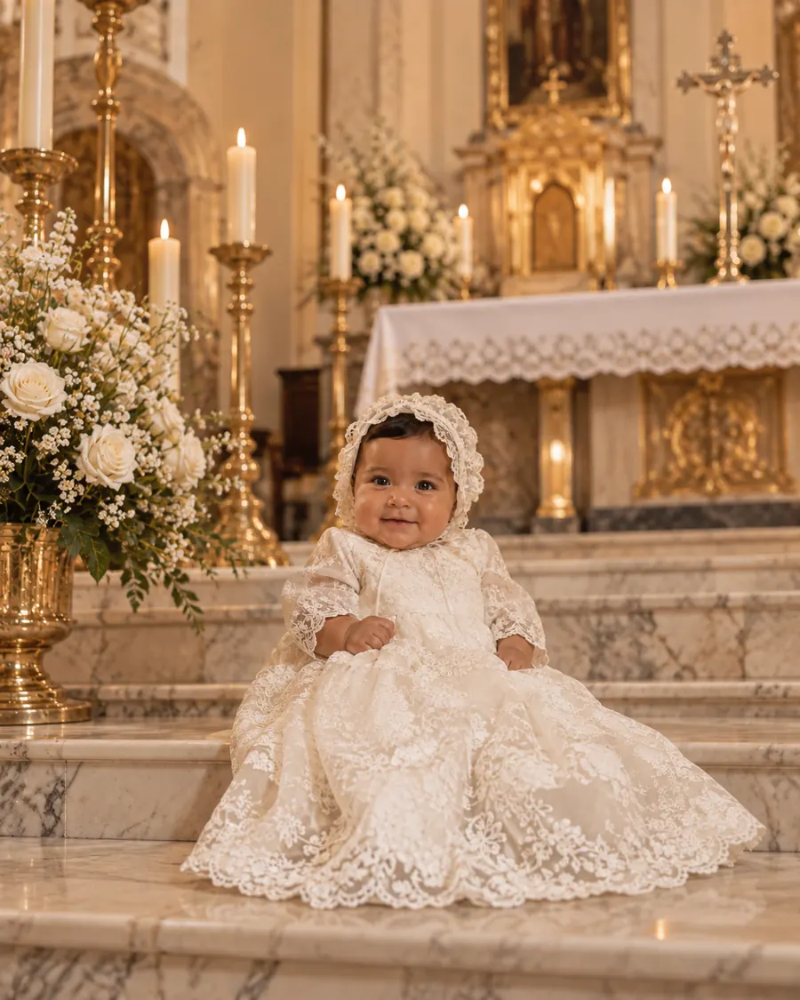
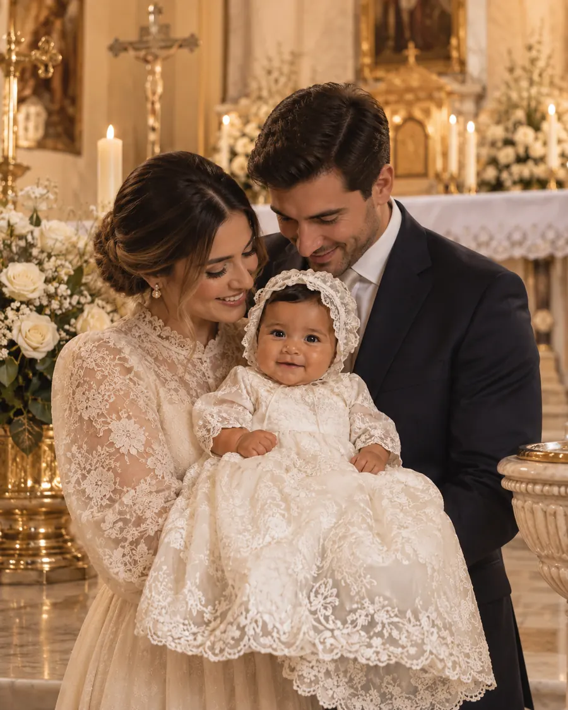

Un día de fe
y familia
Queremos que estés con nosotros el día en que Santiago recibe el bautismo, rodeado de quienes lo quieren.

Ubicación
¿Dónde será?
Ceremonia · 1:00 pm
Parroquia de San Juan Bautista
Jardín Centenario 8, Coyoacán
Ciudad de México
Nuestro Santiago

Tres meses, y ya nos cambió la vida
Con la bendición de
Sus papás
Juan Pablo Arriaga Montiel
Regina Solís de Arriaga
Sus padrinos
Ernesto Solís Barrera
María Teresa Montiel Cruz
Vestimenta formal. Te pedimos puntualidad: la misa empieza en punto.
Confirmación
 Hecho por Savey
Hecho por Savey